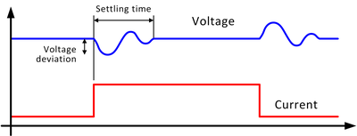

XPS256 load step response
Explanation of terms:

| Load step response 1) | Regulation mode | Load step | 100 μF 5) | 47 μF 5) | 10 μF 2) |
|---|---|---|---|---|---|
| Settling time 3) | Fast | 50 % 6) | 20 μs | 15 μs | 10 μs |
| 80 % 7) | 20 μs | 15 μs | 10 μs | ||
| Standard | 50 % 6) | 50 μs | 30 μs | 20 μs | |
| 80 % 7) | 55 μs | 35 μs | 25 μs | ||
| Maximum voltage deviation 4) | Fast | 50 % 6) | 30 mV | 40 mV | 85 mV |
| 80 % 7) | 55 mV | 70 mV | 120 mV | ||
| Standard | 50 % 6) | 60 mV | 65 mV | 110 mV | |
| 80 % 7) | 90 mV | 110 mV | 140 mV |
Functional changes
- Introduced in SmarTest 7.10.1
1) Typical at pogo pin, in n * ±1.0 A
range, clamp setting n * 1 A (n = number of channels
ganged)
2) Voltage bandwidth: 30 kHz
3) At 1 V, settling into ±10 mV
of programmed value
4) At 1 V, any
number of channels ganged
5) Voltage bandwidth: 50 kHz
6) Verified at 25 % to 75 % load step
7) Verified at 10 % to 90 % load step